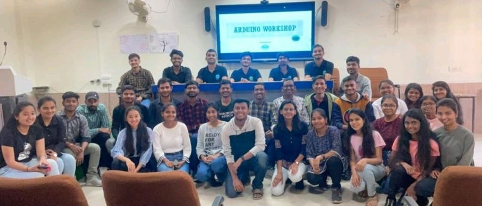
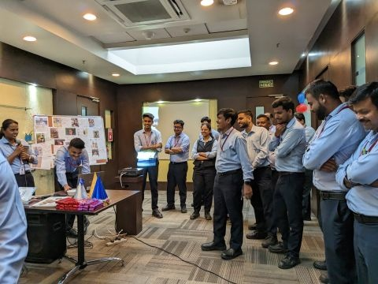
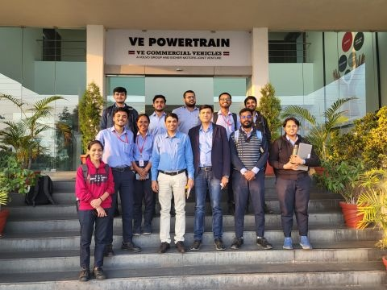
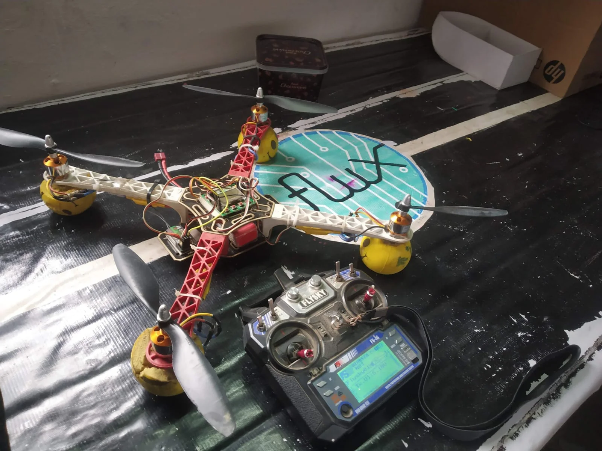
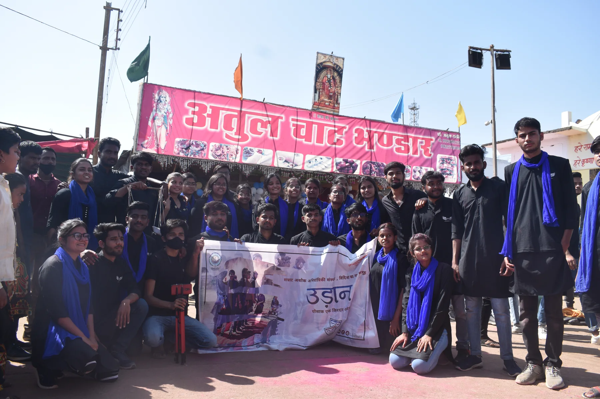

Photography
Looking for interesting details, light, and stories worth capturing.
View my photographyPERSONAL INTERESTS
Creativity, strategy, and hands-on learning are part of how I recharge and how I approach new challenges.
Looking for interesting details, light, and stories worth capturing.
View my photographyPracticing patience, pattern recognition, and thinking ahead.
View my Chess.com profileLearning by building, experimenting, and refining practical ideas.
Coordinating people and details to create a shared experience.
AREAS I LIKE EXPLORING
COMMUNITY & LEADERSHIP
Member · Instructor · Club Secretary · S.A.T.I.
Led Arduino and IoT workshops and helped organize Roborace, Robowar, and Miniature Madness.Content Writer · Editor · Chief Editor
Led the student newsletter team as chief editor in the final year of my degree.Photographer & Editor · Coordinator
Photographed and edited for the institute’s photography and cinematography club; selected photographs appeared in local newspapers and media.Student Coordinator · S.A.T.I. Vidisha
Supported student activities focused on engineering and mobility.Student Coordinator · S.A.T.I. Vidisha
Contributed to coordination and student-led cultural activities.Student Volunteer · Model Exhibition Participant
Led a student volunteer committee, exhibited the 5-DOF robotic arm, and connected with young scientists.E-Cell, IIT Bombay · 2020–2021
Promoted entrepreneurial initiatives through my college network.Internshala · Mar–May 2020
M.P. Council of Science & Technology · Science and technology
SELECTED MOMENTS






